ansett |>
filter(Airports=="MEL-SYD", Class=="Economy") |>
autoplot(Passengers) AFRICAST
AFRICASTTidy time series & forecasting in R
Time series patterns and basic graphics
Session 2 of 10


workshop.f4sg.org/africastForecasting for Social Good
Time series Patterns
Key patterns of time series
Level
Underlying trend
Seasonal/cycle
Autocorrelation
Unpredictable patterns/Noise
Different types of events and driving factors (i.e. predictors) may affect the time series
Time series patterns
- Level
- The level of a time series describes the centre of the series.
- Trend
- A trend describes predictable increases or decreases in the level of a series.
- Seasonal
- Seasonality is a consistent pattern that repeats over a fixed period of time. pattern exists when a series is influenced by seasonal factors (e.g., the quarter of the year, the month, or day of the week).
- Cyclic
- pattern exists when data exhibit rises and falls that are not of fixed period (duration usually of at least 2 years).
Level
Trend
Seasonality
Additive versus multiplicative seasonality
Cycles
Time plots
Time plots
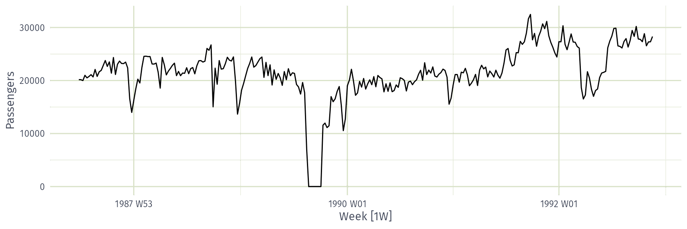
Time plots
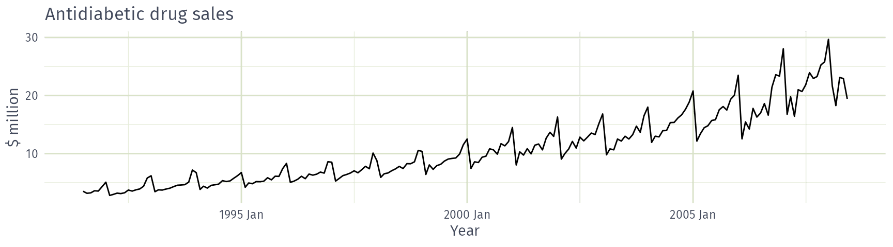
Seasonal plots
Seasonal plots
- Data plotted against the individual “seasons” in which the data were observed. (In this case a “season” is a month.)
- Something like a time plot except that the data from each season are overlapped.
- Enables the underlying seasonal pattern to be seen more clearly, and also allows any substantial departures from the seasonal pattern to be easily identified.
- In R:
gg_season()(ggtime)
Building a seasonal plot
Time plot of quarterly Australian beer production since 1992.
Each observation belongs to a year. Split the line between years, half-way between Q4 and the next Q1.
Move each year back to the start in turn, stacking them. The time axis narrows to a single year.
Remove the points: the seasonal plot, with one line per year.
Quarterly Australian Beer Production
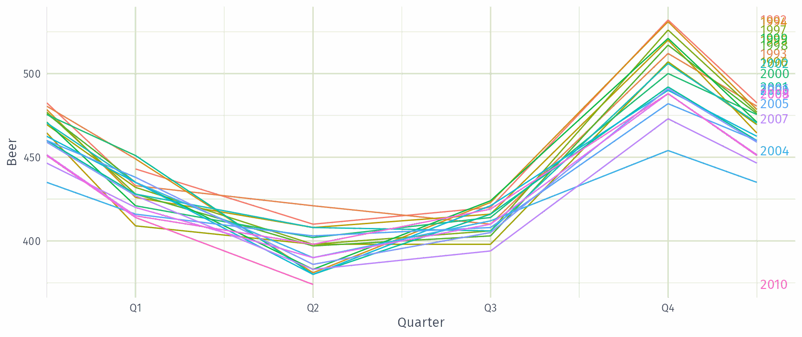
Multiple seasonal periods
# A tsibble: 52,608 x 5 [30m] <Australia/Melbourne>
Time Demand Temperature Date Holiday
<dttm> <dbl> <dbl> <date> <lgl>
1 2012-01-01 00:00:00 4383. 21.4 2012-01-01 TRUE
2 2012-01-01 00:30:00 4263. 21.0 2012-01-01 TRUE
3 2012-01-01 01:00:00 4049. 20.7 2012-01-01 TRUE
4 2012-01-01 01:30:00 3878. 20.6 2012-01-01 TRUE
5 2012-01-01 02:00:00 4036. 20.4 2012-01-01 TRUE
6 2012-01-01 02:30:00 3866. 20.2 2012-01-01 TRUE
7 2012-01-01 03:00:00 3694. 20.1 2012-01-01 TRUE
8 2012-01-01 03:30:00 3562. 19.6 2012-01-01 TRUE
9 2012-01-01 04:00:00 3433. 19.1 2012-01-01 TRUE
10 2012-01-01 04:30:00 3359. 19.0 2012-01-01 TRUE
# ℹ 52,598 more rowsMultiple seasonal periods
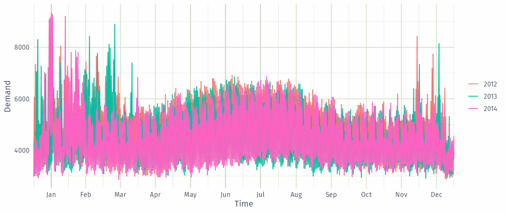
Multiple seasonal periods
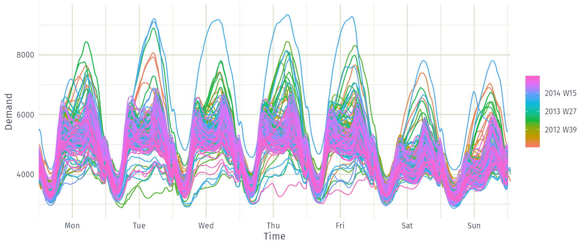
Multiple seasonal periods
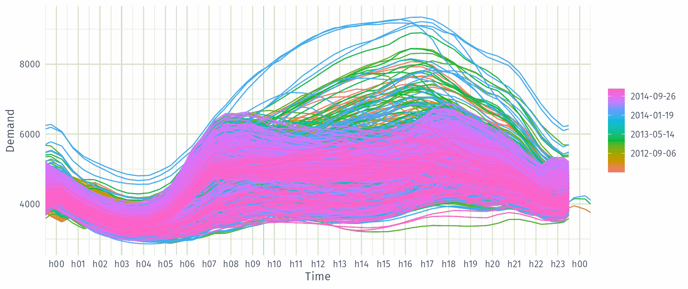
Seasonal subseries plots
- Data for each season collected together in time plot as separate time series.
- Enables the underlying seasonal pattern to be seen clearly, and changes in seasonality over time to be visualised.
- In R:
gg_subseries()(ggtime)
Building a seasonal subseries plot
Time plot of quarterly Australian beer production since 1992.
Each observation belongs to a quarter of the year.
Join the observations from the same quarter: four subseries, each a time series in its own right.
Separate the subseries and place them side by side to compare the quarters.
Add the mean of each quarter: the seasonal subseries plot.
Australian holidays
# A tsibble: 640 x 3 [1Q]
# Key: State [8]
State Quarter Trips
<chr> <qtr> <dbl>
1 ACT 1998 Q1 196.
2 ACT 1998 Q2 127.
3 ACT 1998 Q3 111.
4 ACT 1998 Q4 170.
5 ACT 1999 Q1 108.
6 ACT 1999 Q2 125.
7 ACT 1999 Q3 178.
8 ACT 1999 Q4 218.
9 ACT 2000 Q1 158.
10 ACT 2000 Q2 155.
# ℹ 630 more rowsAustralian holidays
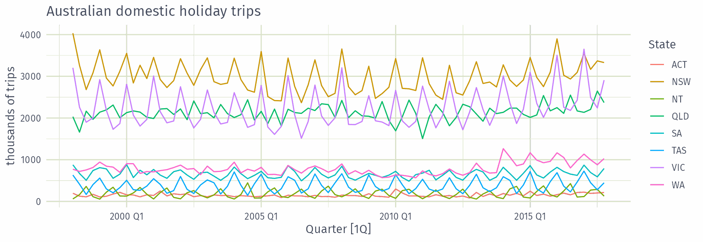
Seasonal plots
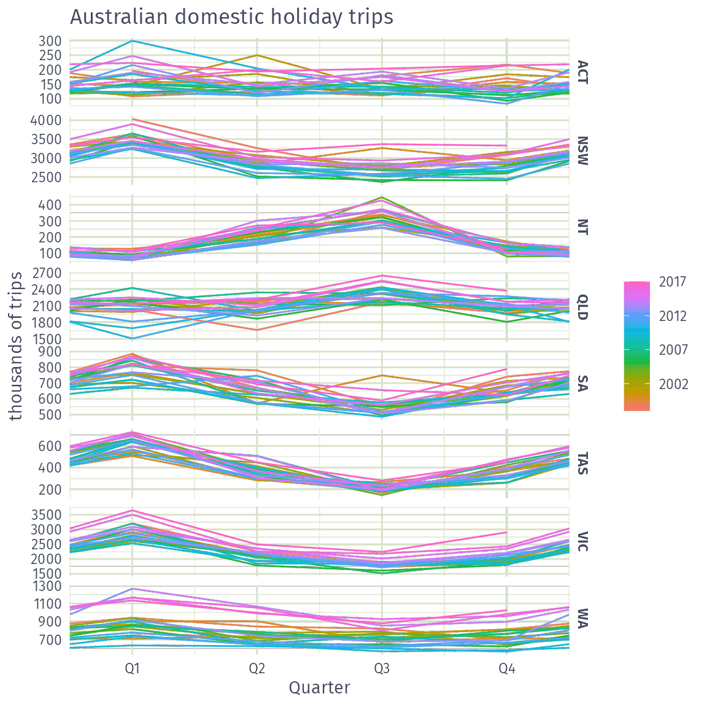
Seasonal subseries plots
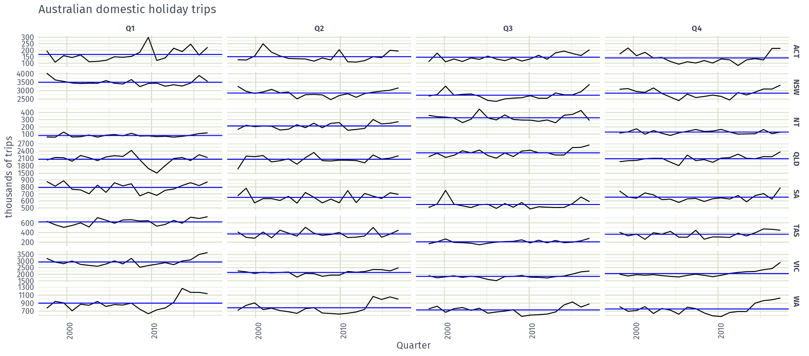
Calendar plots
library(ggtime)
vic_elec |>
filter(year(Date) == 2014) |>
as_tibble() |>
ggplot(aes(x = Time, y = Demand)) +
geom_line() +
coord_calendar(rows = month(1L), cols = NULL) +
scale_x_mixtime(
time_breaks = mixtime::days(1L),
time_labels = "{cyc(day, cal_isoweek$week, label = TRUE, abbreviate = TRUE)}"
) +
theme(axis.text.y = element_blank(), axis.ticks.y = element_blank())coord_calendar()cuts a time axis into a calendar-like grid of rows/columns- each row above is a month, and each cell within it a day
Calendar plots
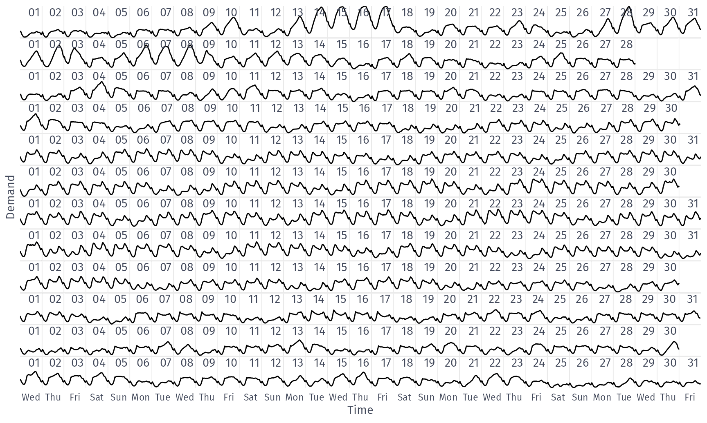
Seasonal or cyclic?
Time series patterns
- Trend
- pattern exists when there is a long-term increase or decrease in the data.
- Seasonal
- pattern exists when a series is influenced by seasonal factors (e.g., the quarter of the year, the month, or day of the week).
- Cyclic
- pattern exists when data exhibit rises and falls that are not of fixed period (duration usually of at least 2 years).
Time series components
Differences between seasonal and cyclic patterns:
- seasonal pattern constant length; cyclic pattern variable length
- average length of cycle longer than length of seasonal pattern
- magnitude of cycle more variable than magnitude of seasonal pattern
Time series patterns
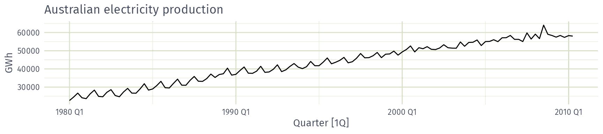
- Seasonal
- Cyclic
- Both
- Neither
Time series patterns
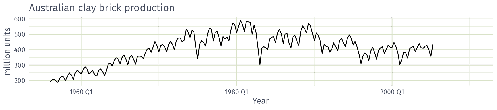
- Seasonal
- Cyclic
- Both
- Neither
Time series patterns
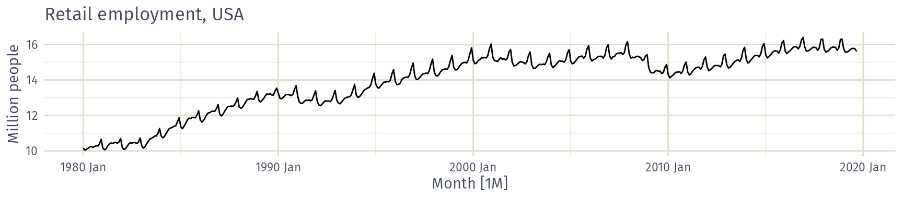
- Seasonal
- Cyclic
- Both
- Neither
Time series patterns
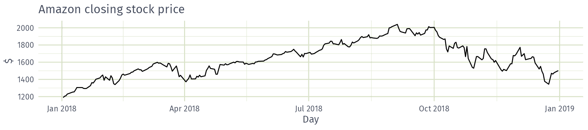
- Seasonal
- Cyclic
- Both
- Neither
Time series patterns
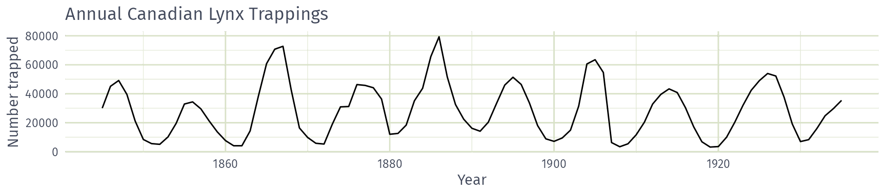
- Seasonal
- Cyclic
- Both
- Neither
Seasonal or cyclic?
Differences between seasonal and cyclic patterns:
- seasonal pattern constant length; cyclic pattern variable length
- average length of cycle longer than length of seasonal pattern
- magnitude of cycle more variable than magnitude of seasonal pattern
The timing of peaks and troughs is predictable with seasonal data, but unpredictable in the long term with cyclic data.
Lag plots and autocorrelation
Example: Beer production
# A tsibble: 74 x 7 [1Q]
Quarter Beer Tobacco Bricks Cement Electricity Gas
<qtr> <dbl> <dbl> <dbl> <dbl> <dbl> <dbl>
1 1992 Q1 443 5777 383 1289 38332 117
2 1992 Q2 410 5853 404 1501 39774 151
3 1992 Q3 420 6416 446 1539 42246 175
4 1992 Q4 532 5825 420 1568 38498 129
5 1993 Q1 433 5724 394 1450 39460 116
6 1993 Q2 421 6036 462 1668 41356 149
7 1993 Q3 410 6570 475 1648 42949 163
8 1993 Q4 512 5675 443 1863 40974 138
9 1994 Q1 449 5311 421 1468 40162 127
10 1994 Q2 381 5717 475 1755 41199 159
# ℹ 64 more rowsExample: Beer production
Example: Beer production
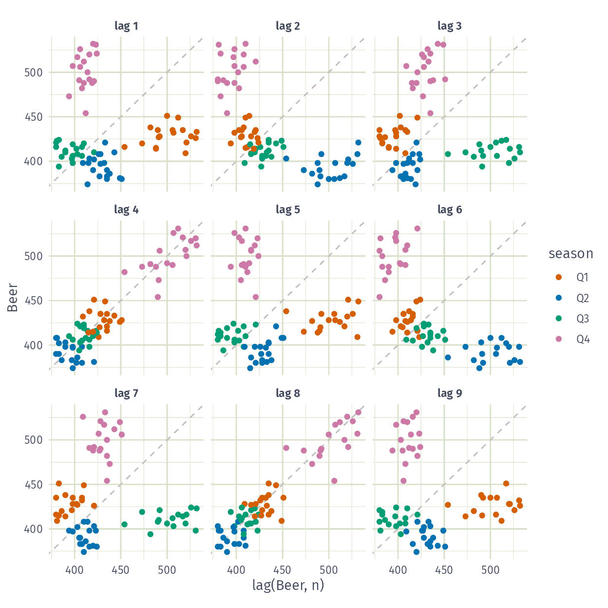
Lagged scatterplots
- Each graph shows \(y_t\) plotted against \(y_{t-k}\) for different values of \(k\).
- The autocorrelations are the correlations associated with these scatterplots.
- ACF (autocorrelation function):
- \(r_1=\text{Correlation}(y_{t}, y_{t-1})\)
- \(r_2=\text{Correlation}(y_{t}, y_{t-2})\)
- \(r_3=\text{Correlation}(y_{t}, y_{t-3})\)
- etc.
- If there is seasonality, the ACF at the seasonal lag (e.g., 12 for monthly data) will be large and positive.
From lag plots to the ACF
Time plot of quarterly Australian beer production since 1992.
Shift a copy of the series (orange) by one quarter, pairing each observation with the one before it.
Each pair is a point in the lag plot: \(y_t\) against \(y_{t-1}\). The first observation has no pair, so it is dropped.
The autocorrelation \(r_1\) measures the linear relationship in this lag plot (orange line). It is small and negative: the first ACF bar.
Shift the copy by another quarter. At lag 2, each quarter is paired with the quarter half a year earlier, so the seasonality is out of phase: peaks are paired with troughs, and \(r_2\) is strongly negative.
Shift the copy by another quarter. At lag 3, each quarter is paired with the following quarter of the previous year. Like lag 1, these are neighbouring quarters, so \(r_3\) is close to zero.
Shift the copy to lag 4. Now each quarter is paired with the same quarter a year earlier, so the seasonal peaks and troughs line up: \(r_4\) is large and positive.
Continue for lags 5, 6, … The seasonal lags 8, 12 and 16 also align the same quarters, so they are strongly positive too.
The ACF plot. Dashed blue lines indicate 95% significance thresholds to help identify white noise.
Autocorrelation
Results for first 9 lags for beer data:
Autocorrelation
Results for first 9 lags for beer data:
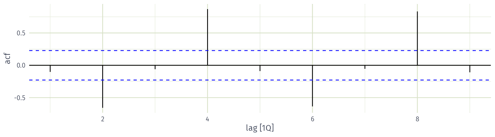
ACF
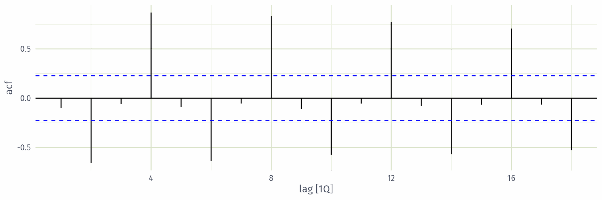
Australian holidays
# A tsibble: 152 x 3 [1Q]
# Key: State [8]
State lag acf
<chr> <cf_lag> <dbl>
1 ACT 1 quarter 0.0877
2 ACT 2 quarter 0.252
3 ACT 3 quarter -0.0496
4 ACT 4 quarter 0.300
5 ACT 5 quarter -0.0741
6 ACT 6 quarter 0.269
7 ACT 7 quarter -0.00504
8 ACT 8 quarter 0.236
9 ACT 9 quarter -0.0953
10 ACT 10 quarter 0.0750
# ℹ 142 more rowsAustralian holidays
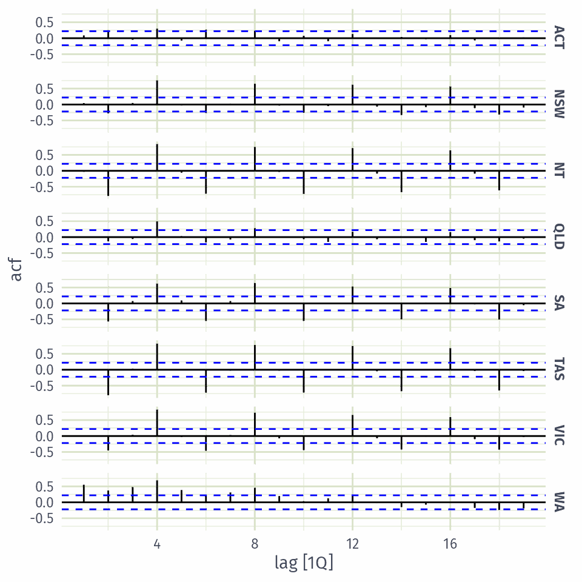
Trend and seasonality in ACF plots
- When data have a trend, the autocorrelations for small lags tend to be large and positive.
- When data are seasonal, the autocorrelations will be larger at the seasonal lags (i.e., at multiples of the seasonal frequency)
- When data are trended and seasonal, you see a combination of these effects.
US retail trade employment
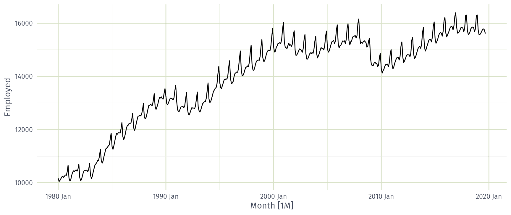
US retail trade employment
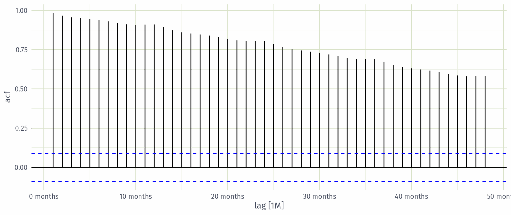
Google stock price
# A tsibble: 252 x 2 [!]
Date Close
<date> <dbl>
1 2015-01-02 522.
2 2015-01-05 511.
3 2015-01-06 499.
4 2015-01-07 498.
5 2015-01-08 500.
6 2015-01-09 493.
7 2015-01-12 490.
8 2015-01-13 493.
9 2015-01-14 498.
10 2015-01-15 499.
# ℹ 242 more rowsGoogle stock price
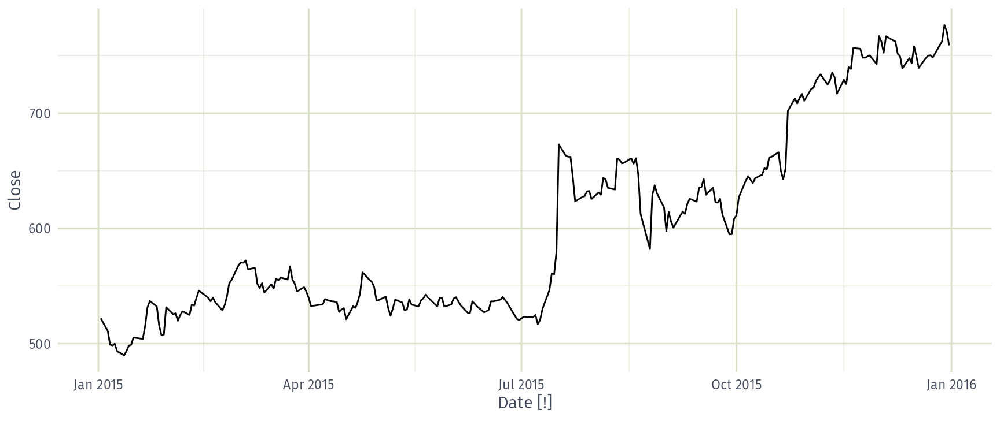
Google stock price
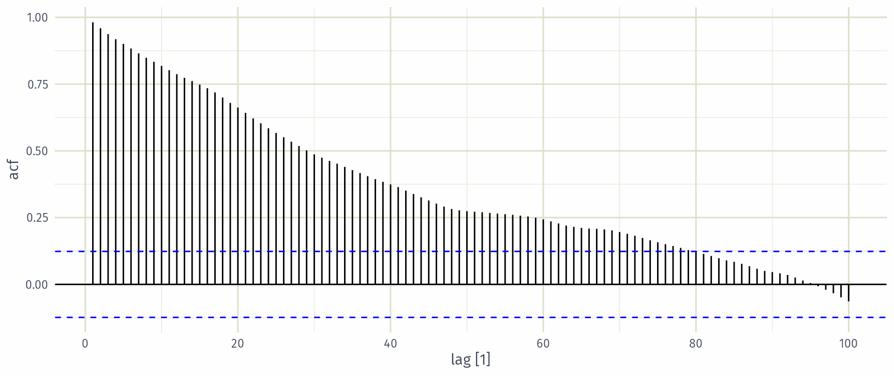
Which is which?
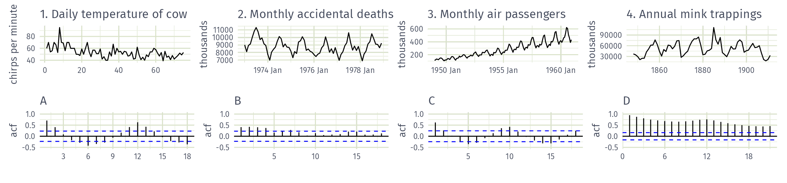
- 1A, 2B, 3C, 4D
- 1B, 2A, 3D, 4C
- 1B, 2D, 3A, 4C
- 1C, 2A, 3D, 4B
White noise
Example: White noise
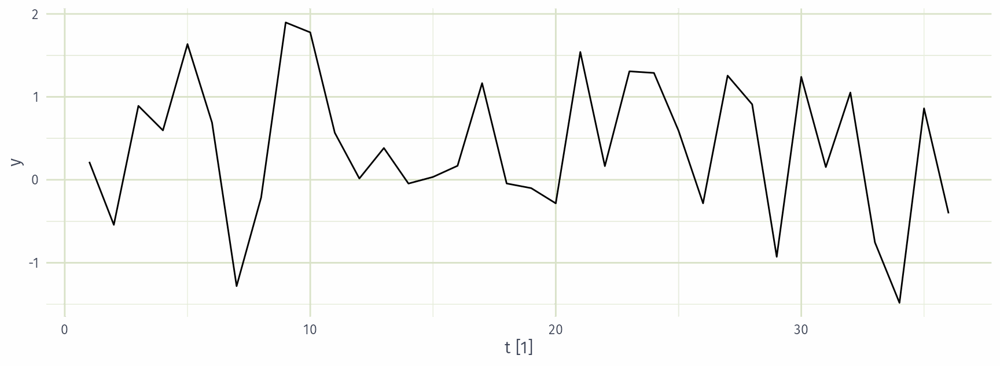
White noise data is uncorrelated across time with zero mean and constant variance.
(Technically, we require independence as well.)
Example: White noise
| \(r_{1}\) | \(r_{2}\) | \(r_{3}\) | \(r_{4}\) | \(r_{5}\) | \(r_{6}\) | \(r_{7}\) | \(r_{8}\) | \(r_{9}\) | \(r_{10}\) |
|---|---|---|---|---|---|---|---|---|---|
| 0.001 | -0.216 | -0.144 | 0.033 | 0.126 | -0.039 | 0.100 | -0.051 | -0.198 | -0.198 |
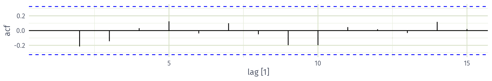
- Sample autocorrelations for white noise series.
- Expect each autocorrelation to be close to zero.
- Blue lines show 95% critical values.
Example: Pigs slaughtered
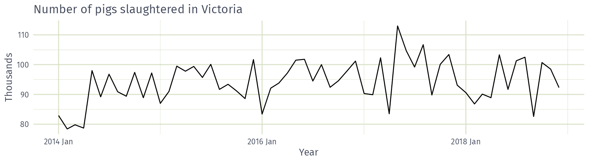
Example: Pigs slaughtered
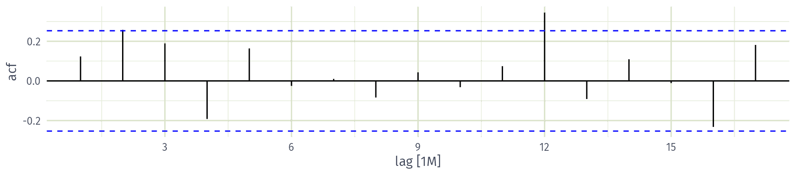
- Yes
- No
Example: Pigs slaughtered
Monthly total number of pigs slaughtered in the state of Victoria, Australia, from January 2014 through December 2018 (Source: Australian Bureau of Statistics.)
- Difficult to detect pattern in time plot.
- ACF shows significant autocorrelation for lag 2 and 12.
- Indicate some slight seasonality.
These show the series is not a white noise series.